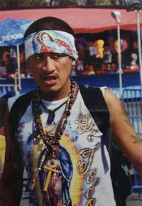
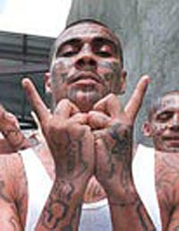
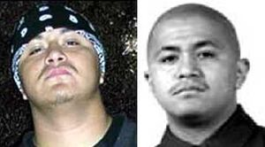
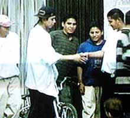
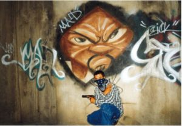
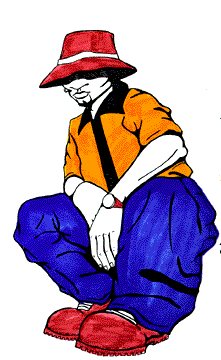
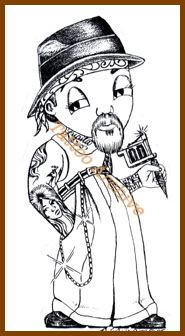

Cholo (tribu urbana)
 De: La Frikipedia, la enciclopedia extremadamente seria.
De: La Frikipedia, la enciclopedia extremadamente seria.
| De la serie tribus urbanas del mundo:
|
| Cholo (tribu urbana)
|
Ejemplo de la tribu

|
| Típico "Cholillo" (Diminutivo despectivo)
|
|
| Hábitat
|
Norte de México y Sur de California y playa del crimen cantina rock y las Cárceles.
|
| Inteligencia
|
Tienen, aunque solo la demuestran al momento de atacar y para hacerse churrrooossssssssssssssssssssssssssssssss
|
| Frase favorita
|
Oye Morro, ¿Qué Hora Traes?
|
| ¿Peligroso?
|
DEMASIADO, en grupos aun más apropósito menciones que amo a los cholos...
|
| Obsesión
|
Ser importante en la pandilla, crear una micro mafia y básicamente ser Cholo (no tiene muchas aspiraciones)
|
| Notas
|
Un candado, un bate de beísbol, cadenas... puede usar cualquier cosa como un arma
|
«Cholo» redirige aquí. Para otras acepciones, véase Cholo (desambiguación).
El cholo es la persona amante de la vida urbana en su sencilla forma de pandillas. En Mara Salvatrucha. Aunque también llega a utilizarse "cholo" desde una perspectiva androfóbica y desinformada, como un adjetivo para aquellos asesinos psicomaniacos que emigran a los E.U.A con fines de dominar el mundo.
Origen
Teoría 1: En el Virreinato del imperio espiñol a los indígenas les estaba prohibido montar o poseer caballos Con low rider. Para las labores de robo sin embargo era necesario emplear vaqueros preferentemente del K.K.K. y en pocos casos negros; entre las condiciones para otorgarles permisos para montar low rider estaban el ser empleados en un garito, utilizar armas distintas a las militares y vestir con cuero o gamuza por lo que a estos cholos se les llamaba "sureños cuerudos".
Teoría 2: Fueron creados en el CONALEP para mantener a sus estudiantes totalmente disciplinados, y drogarlos para sacarlos de una realidad hermosa en donde pueden traficar con armas, drogas, chinos, violar, matar sin ninguna razón aparente etc. Pero los cholos se revelaron provocando la guerra de los pasteles (pero con armas AK-47), independizándose como especie única.
Teoría 3: Son descendientes directos de varios predadores primigenios de la época jurásica, que principalmente se alimentan de presas tales como venados, búfalos, lobos, etc.
Teoría 4: Debido a las zonas donde crecen (Barrios por lo general humildes), estas personas optan por tomar hobbies bastante simples y predecibles (Fumar, Graffitear, Drogarse, Pelear, etc.) obviamente estas personas son carentes de animo por intentar pasatiempos nuevos y sanos, suenan hasta raro para ellos, aunque durante la infancia suelen ser igual al resto de las demás personas de las demás tribus, lo que realmente afecta en su desarrollo como personas es vivir en lugares poco interesantes; es increíble pero algunos de ellos poseen un coeficiente intelectual muy alto, no suelen expresarlo porque lo encuentran inútil frente a otros integrantes de su tribu.
Comportamiento
cholo sureño llevando a cabo el ritual del dinero
 sureño haciendo el ritual de la lluvia
En solitario los Cholos se dedican principalmente pintar graffitis y actividades delictivas menores (uno que otro secuestro) en grandes grupos son auténticos dolores de cabeza, para ellos mismos y para todo los demás.
Su única muestra de inteligencia verdadera la da al momento de defenderse: es capaz de convertir cualquier cosa en un arma: un candado dentro de un calcetín (si, si ha pasado), una cadena, una navaja improvisada a partir de un pedazo de plástico, una varilla metálica convertida en un alfiler tamaño familiar, una especie de arma de fuego/ballesta de un sólo disparo creada a partir de un pedazo de tubería... ¡Bueno carajo! uno se pregunta ¿de dónde demonios sacan tanta imaginación?
Lo que mas les gusta es el futbol pero no verlo si no pelearse con los aficionados del equipo contrario pensando que de esa forma ganaran su equipo favorito el campeonato
A saber el cholo es el peor enemigo del Cholo, se dice que: "Perro no come perro pero cholo si come cholo", por lo que si un cholo te muerde te volverás cholo... y te dará un Herpes.
Existen otras tribus en cierta medida similares aunque no tan salvajes como tal (Cumbias y en ocasiones se puede agregar el Rap.
Hábitat
Originariamente se encontraban en todo el norte de México sobre todo en las ciudades fronterizas (Tijuana, Nogales y Monterrey) en donde abundan y la zona fronteriza, últimamente han expandido su territorio por el sureste de Estados Unidos, le dieron su toque especial de glamour a ciudad de Los Ángeles más que a ninguna otra ciudad.
Como era de esperar, debido a su naturaleza, ya entraron en conflicto permanente contra grupos de negros (pandillas), blancos (supremacistas blancos), asiáticos (mafias) y, por supuesto, otros cholos.
 La pañoleta tiene una función
En los 90's abundaban en Ciudad Neza (Estado de México) en los limites de Chimalhuacan (Estado de México), pero al parecer no se los habían dicho porque creían que se encontraban en Los Ángeles pese a esto, algunos suelen ser sedentarios y deciden quedarse en sus respectivos territorios aun los podemos encontrar en Ciudad Neza y un misterioso lugar del cual aun no esta confirmada su existencia ante los ojos de Valle de Chalco
(Nota: Obviamente no dejan entrar a sus vastos dominios a otro que no sea de su misma especie).
Caracteristicas
Los Cholos presentan una muy variada gama de características que los diferencian de las otras tribus urbanas de México, entre ellas:
- los pandilleros, cholos mexicanos son descendientes de Lex Luttor y por esa razón carecen de cabello
- Solo en caso de tener cabello el tipo de peinado se realiza hacia atrás para demostrar que son criaturas decentes y elegantes
- practican el asalto a mano armada como deporte
- los encuentras en varios colores diferentes
- son vegetarianos, pues se fuman las plantitas de su jardín
- en algunos casos pueden romper su dieta y comerse a su presa
- se les suele encontrar en lugares obscuros a altas horas de la noche conversando con su otro yo
- son violentos y solo un 15% de ellos se puede domesticar
- nacen en México, emigran a gringolandia, se vuelven negros, crean de una a dos discografías y mueren a las 3 semanas.
- se caracterizan por la frase: el poder de la droga abre la mente.
- son los mejores comerciantes ya que los encuentras en la calle vendiéndote todo tipo de cosas en la calle como: vajillas, cubiertos, A-K 47, celulares, y hasta juguetes
- son 100% católicos y lleva en sus vestimentas la imagen de la virgen morena, el papa nazi y el profeta Samuel (sea quien sea)
- se caracterizan por llevar a cabo carreras ilegales de autos, hacer apuestas y atropellar emos
- se oponen a la teoría de una realidad alterna
- tienen pensado dominar al mundo para el año 2012
- hacer graffiti ilegal con leyendas como liberen al Tíbet y Paquito es puto y le gusto yo
- se depilan los bellos de las piernas
- los cholos sureños (13) golpean a los cholos norteños (18), los cholos sureños y norteños unen fuerzas para golpear y patear emos
- apoyan el calentamiento global, ya que el humo que producen al ingerir desperdicios radioactivos producen un efecto invernadero
- en caso de ser cantantes se hacen llamar DIABLO, DEMONIO, SATANÁS, PELÓN, EL ASESINO o el NAZI NEGRO
- los fines de semana suelen hacer carreras de caballos con nitro y low rider.
- Bato, puto, Homie, culo, wey, yomi y ese, ese, ese, ese, ese, ese, son solo algunas de las frases del buen cholo México-chicano-afro-japonés-nazi-alemán-chundo etc...
- se enfadan con demasiada facilidad, nunca veas a un cholo directamente a los ojos, en caso de ser asi, ve rezando llama al chapulin colorado y pensando quien le dará de comer a tu gato...
- Tienen habilidades sobrehumanas con la navaja y artículos de cocina.
Habla
 cholo en el ritual del apareamiento
Aparte de su terminología propia, existe otra estupidez muy propia de ellos al hablar: la inútil duplicación de algunas consonantes.
Ejemplos varios subrayando la consonante doble, marcando en negro el termino estúpido y traducción a cristiano entre paréntesis:
- "¿Qué pedo ese?" ("¿Qué hay de nuevo caballero?")
- "¿Que hubo morro?" ("¿Qué hay de nuevo señor?")
- "¡Orale ese!" (¡Vaya con usted y sus cosas amigo!)
- "Oye Vato" (¡Escuche compañero humano!)
- "¡Carnal!" (¡Amigo o probable pariente!)
- "¡La Chota!" (¡Retirémonos camaradas, Que es la policía la que se acerca y esta nos es adversa!)
- "¿Qué paso carnal?" (Con tono burlón: Estoy a punto de asaltarle caballero o saluda a algún pariente)
- "¡ChaleSSS carnal!, me chiskeo tantillo pa' mi cantona y de rato me retacho, ¡ahorita nos wachamos, ¿va?!" (Voy un momento a mi casa y ahoraita vuelvo, nos vemos enseguida)
- "Me entiendez Mendez" (¿Me acabas de entender, Mendez?)
- "Me explico Federico" (¿Me acabas de entender, Federico?)
- "Sereno moreno" (Que no cunda el pánico, permanece calmado... o esta haciendo un piropo a su novio cholo)
- "Nos vemos al RATON loco" ( Te veré por ahí en aproximadamente 15 minutos).
- "Orale pendejo" (¿Que hay de nuevo amigo?)
- "Peiname y dime Don Juan" (Me veo Sepsi)
- "Boleame los zapatos y dime señorito" (Me veo Sepsi)
- "Chales" (Ni modo)
- "Chale" (¡Que mal me pasó!)
- "Vengo de valle de chalco" (Vengo de (x) ciudad)
- "No soy Chundo, soy cholo" (Soy lo que soy (Es hermoso como protegen su tribu))
- "Neta we, no mames ese" (Por favor, no me apetece sexo oral)
- "amos a atizarle" (hoo vamos a fumar marihuana señor)
Como se puede ver sorprende su riqueza lingüística: "Vato" = "Morro" = "Ese".
Cholos piratas
Son aquellos que rondan las secundarias, ferias, plazas, cines, etc. De cualquier ciudad de México, ellos creen ser cholos o muy malotes sólo por que uno de ellos conoce a alguien que conoce a alguien que conoce a alguien verdaderamente peligroso, por lo que lo hacen su líder.
Se les conoce por estas razones:
- Se visten con ropa diez tallas mayor que la que deberían usar.
- Para ellos: canciones románticas significa canciones de Porta.
- Hablan con casi todas las palabras de la sección de arriba.
- Creen que el Barça es el mejor equipo de toda la historia y Messi el mejor jugadorazo de la historia todo porque no tienen ni puta idea de quien fue Pelé y porque creen que toda la historia del furbo comenzó en 2009.
- Se creen muy buenos en furbo (Furbo americano o normal) solo porque han ganado 10000000 veces la liga de su barrio y eso los llevo a entrenar con un equipo que el cree muy bueno pero en realidad son un montón de gilipollas.
- Se creen muy malotes, pero muy, muy, muy, malotes por las razones explicadas arriba.
- Creen que todos en el cole deben de respetarlos y admirarlos, pero solo entre ellos se respetan, se quieren, y se agradan.
- Siempre están sentados en alguna parte arrojando piedras y oyendo rap a todo volumen como si a todos nos agradara esa mierda de música.
- No tienen ni puta idea (realmente, no tienen ni puta idea de nada) de quien fue Héroes del Silencio, Soda Stereo, etc. Porque creen que el rap es la única música que existe y creen que a todos les gusta.
- Por esa misma razón, cuando van en un auto de alguno de ellos (robado según ellos), lo ponen a todo volumen.
- Puedes jugar ajedrez sobre sus tenis marca Converse.
- Su novia es la más buena de la escuela solo porque el lo dice, pero ella no lo quiere (igual que todos los demás).
- Siempre le dedica canciones de Porta.
- Según el, ya la folló.
- Y todo esto, por los 3 días que fueron novios, (cuando el la corta, se retira a algún lugar a seguir oyendo al maldito Porta, se entristece unas horas, y al día siguiente vuelve a ser la plaga que es).
- Según ellos, han participado en miles de peleas callejeras, cuando apenas si golpean al bando gilipollas del salón.
- Según ellos, han fumado miles de porros.
- Según ellos, la policía los ha llevado miles de veces. Y todas han escapado, historia ficticia que se vuelve real con el director del cole, que los ha amenazado miles de veces con expulsarlos.
- Nadie conoce a sus padres.
Apariencia
 Cholo con sus Grafittis Territoriales: Y todavía hay quien dice que esto
no es cultura urbana

El trajín diario de un cholo. Nótese el uso de los términos "
Carnal", "
Ese" y "
Chota"
No puede faltar:
- Una horrenda red en el cabello o en su defecto una Pañoleta en la cabeza, un sombrero estúpido o una gorra
- Pantalones obscenamente amplios
- Camisas sin mangas o bien innecesariamente grandes con logos como graffitis o estrepitosos y desafortunados diseños de la Virgen de Guadalupe (y lo peor es que ni si quiera va a misa)
- Bigotito ridículo
- El tatuaje, siempre aparatoso, ya sea de la Virgen de Guadalupe o el Escudo de Armas del Barrio
- Tenis marca Puma o Adidas siempre impecable blancos (lo único que mantienen limpio), ideales para huir cuando no están en grupo
- Penetrante colonia barata
- Cadenas en los pantalones para comunicar un bolsillo con otro (su verdadera utilidad es aun desconocida)
- Todo lo anterior pero con el logo de su equipo favorito de futbol
Vestimenta
- Corte de cabello: no tienen cabello, pero eso se resuelve no???
- playeras: camisetas blancas XXXL, por si dan el estirón
- pantalones: para los que aun conservan sus piernas, pantalones de mezclilla azules, XXXL, rotos, orinados y embarrados de sangre de algún otro cholo de categoría inferior
- pistola: la pistola (fusca) es fundamental en la vestimenta del buen cholo mexicano pues sirve para intimidar a sus enemigos.
- dinero: sirve para comprar armas, las armas para conseguir dinero y mas dinero para conseguir muchas mujeres, las mujeres para conseguir enfermedades de trasmisión BLUETOOTH, INFRARROJO y WI-FI, y las enfermedades para conseguir su muerte.
- cubiertos: todo buen pandillero come con estilo, utilizando todos los cubiertos para comer, o en su defecto para matar.
¿Qué Utilidad tienen?
 Retrato hablado de cualquier delincuente de su comunidad
 No se deje engañar por la apariencia, si les das la espalda te agrede con el objeto cortante más cercano
- Se golpean entre ellos (siempre en grupos, nunca solos)
- Crean armas de objeto cotidianos
- ... y las usan contra ellos mismos
- Evitar que más personas caigan en el vicio de las drogas al drogarse primero ellos
- ... y por lo mismo evitar por la fuerza que otros cholos se droguen
- A veces, los cholos llegan a organizarse, ganan prestigio entre los demás cholos... y entonces venden drogas
- Por la anterior: Mantener económicamente activo los lucrativos mercados de las drogas y las prostitutas
- Protegen su barrio de otros cholos
- Embellecer la ciudad con graffitis
- Llevar el arte de los tatuajes a los más exorbitantes límites
- Evitar la extinción del SIDA y otras riquezas biológicas intravenosas
- Se comen a las ratas.
- y la más importante: Limpian la ciudad de otros cholos
Enemigos Naturales
- Policías
- Mafias internacionales y bien organizadas
- Otros cholos
- El Chapulín Colorado
- George Bush
- Todo ser razonable
- El gobernador
- El cabello
- Emos
- Raperos
- El jabón (eso explica el olor)
Los 10 mandamientos del cholo mexicano
- Amaras las drogas sobre todas las cosas
- No tomaras el nombre del cholo del 8 en vano
- Llevaras acabo arte conceptual en las paredes de sus vecinos
- Honraras a u padre y madre (solo si ambos son cholos)
- Mataras (a otros cholos)
- Seguirás el código de honor de los pandilleros (a un no se ha inventado)
- Robaras (transeúntes y EMOS)
- En caso de ser detenido por la ley, seguir al pie de la letra el mandamiento N.4
- El cholo que tenia que escribir este mandamiento fue eliminado por Diox
- Practicaras deportes sanos como el asalto y el robo de automóviles.
Ver también
Enlaces Externos
| Tribus Urbanas
|
 Universales Universales
 Españolas Españolas
 Argentinas Argentinas
 Chilenas Chilenas
 Colombianas Colombianas
 Mexicanas Mexicanas
 Peruanas Peruanas
 Venezolanas Venezolanas
|
 Mēxihco Mēxihco
|
Estados Libres y Soberanos Pero Igual Subordinados
Ciudades, Localidades y Ejidos
El Mundo del Espectáculo, la Farándula, Luminarias y otras Vergüenzas
Tribus Urbanas Nacionales
Historia y su Rara Cultura
|
Autor(es):
- Max Slug
- Frikiman
- Alex2610
- Roms
- Azulejos
- Nadaquever
- Mgr33r
- Volkovita de jiménez
- Acrator
- Naruto hyuga
Frikipedia 2005-2016, Licencia
GFDL 1.2 - Extraído por FrikiLeaks